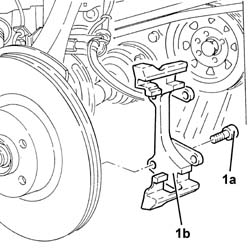
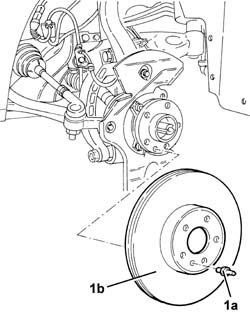
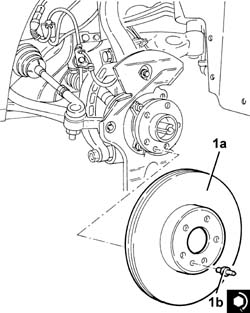
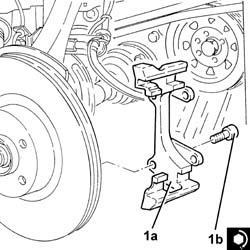

3310A52 FRONT BRAKE DISCS - R+R WITH BRAKE CALIPERS REMOVED
- Path
- Procedures > 33 BRAKING SYSTEM > 3310 DISC BRAKES > 3310A FRONT DISC BRAKES > 3310A52 FRONT BRAKE DISCS - R+R WITH BRAKE CALIPERS REMOVED
- Kind
- repair procedure (removal / refitting; the operation number is the code)
- Applies to
- all engines; all production periods
- Interactive page
- https://sloeber94.github.io/elrnDB-aGt/en/#/125001316
Applies to: engines: 1.8 T.SPARK, 2.0 JTS, 1.9 JTD 16V; all production periods
 Removing
Removing
 Refitting
Refitting1. Undo the bolts (1a) and remove the front brake caliper brackets (1b).

Applies to: engines: 1.8 T.SPARK, 2.0 JTS, 1.9 JTD 16V; all production periods
1. Unscrew the bolts (1a) and remove the front brake discs (1b).

Applies to: engines: 1.8 T.SPARK, 2.0 JTS, 1.9 JTD 16V; all production periods
Refitting
Removing1. Refit the front brake discs (1a) in their seatings and tighten the bolts (1b) to the recommended torque.
 | Fastening | Component | Ø | Value (daNm) |
|---|---|---|---|---|
1b | Pin | FRONT BRAKE DISC. | M8 | (Wheel hub side) 1.0 ÷ 1.4 |

Applies to: engines: 1.8 T.SPARK, 2.0 JTS, 1.9 JTD 16V; all production periods
1. Place the front brake caliper brackets (1a) back in their housings and fix them tightening the bolts (1b) to the recommended torque.
| Fastening | Component | Ø | Value (daNm) |
|---|---|---|---|---|
1b | Bolt | FRONT BRAKE CALIPER BRACKET | M12 | (Front steering knuckle side) 11.1 ÷ 12.3 |

Applies to: engines: 3.2 V6; all production periods
Removing
Refitting1. Unscrew the pin (1a) and remove the front brake disc (1b).
Applies to: engines: 3.2 V6; all production periods
Refitting
Removing1. Refit the front brake disc (1a) in its seating and tighten its bolt (1b) to the specified torque.
| Fastening | Component | Ø | Value (daNm) |
|---|---|---|---|---|
1b | Pin | FRONT BRAKE DISC. | M8 | (Wheel hub side) 1.0 ÷ 1.4 |